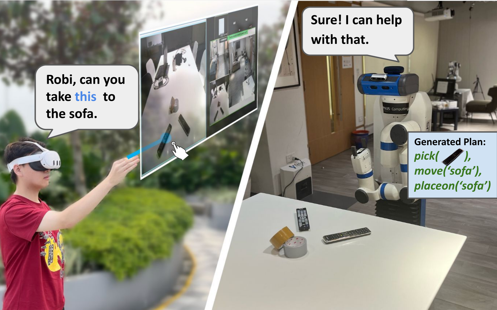
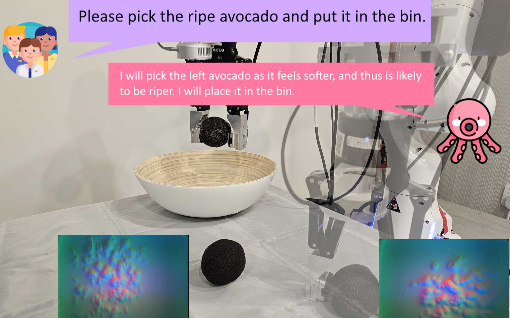
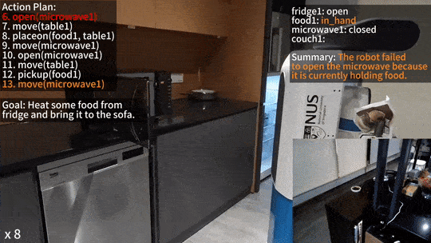
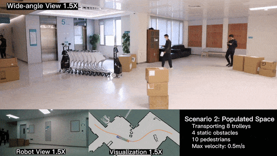
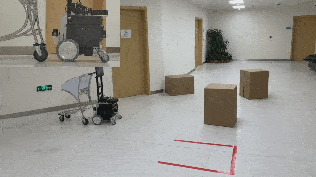
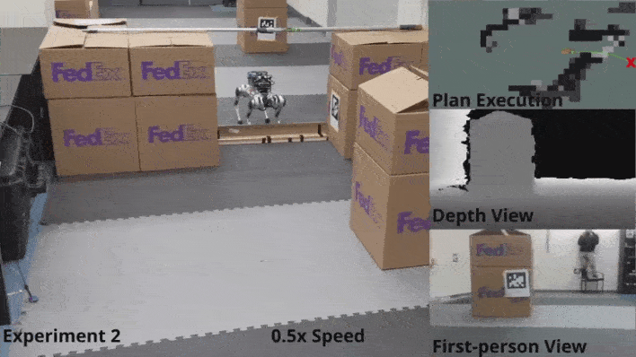

- Served as the technical head of the IEEE student chapter, mentoring over 150 students and organizing workshops on machine learning and data science.
- Represented India in the UNESCO India-Africa Hackathon, developing a blockchain-based solution for equitable water distribution in underprivileged regions.
- Volunteered at a Mumbai-based startup focusing on recycling waste into furniture, promoting environmental sustainability. s
Publications
2024
GeneAI 3.0: powerful, novel, generalized hybrid and ensemble deep learning frameworks for miRNA species classification of stationary patterns from nucleotides
Jaskaran Singh , Narendra N Khanna, Ranjeet K Rout, Narpinder Singh, John R Laird, Inder M Singh, Mannudeep K Kalra, Laura E Mantella, Amer M Johri, Esma R Isenovic, Mostafa M Fouda, Luca Saba, Mostafa Fatemi, Jasjit S Suri
Published in Nature: Scientific reports 2024.
Paper (PDF)
/
Code
2023
An Ensemble-Based IoT-Enabled Drones Detection Scheme for a Safe Community
Jaskaran Singh , Keshav Sharma, Mohammad Wazid, Ashok Kumar Das, Athanasios V Vasilakos
Published in IEEE Open Journal of the Communications Society 2023.
Paper (PDF)
/
Code
Secure Blockchain-Enabled Authentication Key Management Framework with Big Data Analytics for Drones in Networks Beyond 5G Applicationss
Amit Kumar Mishra, Mohammad Wazid, Devesh Pratap Singh, Ashok Kumar Das, Jaskaran Singh , Athanasios V Vasilakos
Published in Drones 2023.
Paper (PDF)
/
Code
An embedded LSTM based scheme for depression detection and analysis
Jaskaran Singh , Mohammad Wazid, D.P. Singh, Sumit Pundir
Published in Elsevier: Procedia Computer Science (4th International Conference on Innovative Data Communication Technology and
Application) 2023.
Paper (PDF)
/
Code
Explainable artificial intelligence envisioned security mechanism for cyber threat hunting
Jaskaran Singh , Keshav Sharma, Mohammad Wazid, Ashok Kumar Das
Published in Wiley: Security and Privacy 2023.
Paper (PDF)
/
Code
2022
ASCP-IoMT: AI-enabled lightweight secure communication protocol for internet of medical things
Mohammad Wazid, Jaskaran Singh , Ashok Kumar Das, Sachin Shetty, Muhammad Khurram Khan, Joel JPC Rodrigues
Published in IEEE Access 2022.
Paper (PDF)
/
Code
Security in IoMT‐driven smart healthcare: A comprehensive review and open challenges
Neha Garg, Mohammad Wazid, Jaskaran Singh , DP Singh, Ashok Kumar Das
Published in Wiley: Security and Privacy 2022.
Paper (PDF)
/
Code
* co-first author
Research
My research interests span general purpose robotic algorithms and specialised robotic systems, including interactive decision making, motion planning and control, assistive robotics, and human-robot interaction. I aim to narrow the gap between robotics research and its applications in socially aware scenarios. My long-term research goal is to develop autonomous robots that can reason and interact with the dynamic and open human-centred environments.
Open-world Reasoning & Planning

Robi Butler: Multimodal Remote Interaction with Household Robotic Assistants
First Author | Mobile Manipulation Workshop @ ICRA 2024
In this paper, we introduce Robi Butler, a novel household robotic system that enables multimodal interaction with the user.
Leveraging advanced communication interfaces, Robi Butler enables users to monitor the robot's status, give text/voice instruction, and select target objects with hand pointing.
At the core of our robotic system are the high-level behavior module powered by Large Language Models (LLMs) that interpret received multimodal instructions to generate plans, and open-vocabulary primitives supported by the Vision-Language Models (VLMs) for executing the planned actions with text and pointing queries.
The integration of above components allows Robi Butler to ground remote multimodal instruction in the real-world home environment in a zero-shot manner.
Paper
Video

Octopi: Object Property Reasoning with Large Tactile-Language Models
Collaboration | Accepted by RSS 2024
In this work, we investigate combining tactile perception with language, which enables embodied systems to obtain physical properties through interaction and apply common-sense reasoning. We contribute a new dataset PHYSICLEAR, which comprises both physical/property reasoning tasks and annotated tactile videos obtained using a GelSight tactile sensor. We then introduce OCTOPI, a system that leverages both tactile representation learning and large vision-language models to predict and reason about tactile inputs with minimal language fine-tuning. Our evaluations on PHYSICLEAR show that OCTOPI is able to effectively use intermediate physical property predictions to improve physical reasoning in both trained tasks and for zero-shot reasoning.
Paper
Website

LLM-State: Expandable State Representation for Long-horizon Task Planning in the Open World
Collaboration | Preprint
We propose a novel, expandable state representation that provides continuous expansion and updating of object attributes from the Language Model's inherent capabilities for context understanding and historical action reasoning. Our proposed representation maintains a comprehensive record of an object's attributes and changes, enabling robust retrospective summary of the sequence of actions leading to the current state. We validate our model through experiments across simulated and real-world task planning scenarios, demonstrating significant improvements over baseline methods in a variety of tasks requiring long-horizon state tracking and reasoning.
Paper
Video
Intelligent Service Robots

Collaborative Trolley Transportation System with Autonomous Nonholonomic Robots
Research Mentor | IROS 2023
This paper presents an autonomous nonholonomic multi-robot system and a hierarchical autonomy framework for collaborative luggage trolley transportation. This framework finds kinematic-feasible paths, computes online motion plans, and provides feedback that enables the multi-robot system to handle long lines of luggage trolleys and navigate obstacles and pedestrians while dealing with multiple inherently complex and coupled constraints. We demonstrate the designed collaborative trolley transportation system through practical transportation tasks in complex and dynamic environments.
Paper
Video

Quadruped Guidance Robot for the Visually Impaired: A Comfort-Based Approach
Research Mentor | ICRA 2023
We propose a novel guidance robot system with a comfort-based concept.
To allow humans to be guided safely and more comfortably to the target position in complex environments, our proposed force planner can plan the forces experienced by the human with the force-based human motion model. And the proposed motion planner generate the specific motion command for robot and controllable leash to track the planned force.
Our system has been deployed on Unitree Laikago quadrupedal platform and validated in real-world scenarios.
Paper
Video

Robotic Autonomous Trolley Collection with Progressive Perception and Nonlinear Model Predictive Control
First Author | ICRA 2022
We propose a novel mobile manipulation system with applications in luggage trolley collection.
The proposed system integrates a compact hardware design and a progressive perception stragy and MPC-based planning framework, enabling the system to efficiently and robustly collect trolleys in dynamic and complex environments.
We demonstrate our design and framework by deploying the system on actual trolley collection tasks, and their effectiveness and robustness are experimentally validated.
Paper
Video

Robotic Guide Dog: Leading a Human with Leash-Guided Hybrid Physical Interactions
First Author | ICRA 2021
We propose a hybrid physical Human-Robot Interaction model that involves leash tension to describe the dynamical relationship in the robot-guiding human system. This hybrid model is utilized in a mixed-integer programming problem to develop a reactive planner that is able to utilize slack-taut switching to guide a blind-folded person to safely travel in a confined space.
The proposed leash-guided robot framework is deployed on a Mini Cheetah quadrupedal robot and validated in experiments.
Paper
Video
Robot Navigation in the Wild

PUTN: A Plane-fitting based Uneven Terrain Navigation Framework
Research Mentor | IROS 2022
We proposed a plane-fitting based uneven terrain navigation framework(PUTN) which is designed for effectively navigating on uneven terrain.
A new terrain assessment with plane-fitting to evaluate the traversability of the terrain is proposed.
Combined with the informed-RRT* and this terrain assessment method, a new planning algorithm, PF-RRT*, is proposed. By using Gaussian Process, the traversability of the dense path is generated given the sample tree generated by PF-RRT*.
The results verify the advantages of the PF-RRT* algorithm and the practicability of PUTN.
Paper
Video
Code

Autonomous Navigation with Optimized Jumping through Constrained Obstacles on Quadrupeds
Collaboration | CASE 2021
We developed an end-to-end framework that enabled multi-modal transitions between walking and jumping skills.
Using multi-phased collocation based nonlinear optimization, optimal trajectories were generated for the quadrupedal robot while avoiding obstacles and allowing the robot to jump through window-shaped obstacles.
An integrated state machine, path planner, and jumping and walking controllers enabled the Mini-Cheetah to jump over obstacles and navigate previously nontraversable areas.
Paper
Video

Hexapod Robotic’s Trajectory Tracking with DNN-Based Nonlinear Model Predictive Control
Collaboration | AIM 2021
We first contribute a well design deep neural network (DNN) as a precise black-box kinematic model of the amphibious robot. Then, we design a DNN based nonlinear model predictive controller which obtains the robot’s real-time moving command by iterative optimization. The simulation results indicate the proposed controller is superior to the basic controller in the robot’s tracking efficiency and accuracy.
Paper
Curriculum Vitae
Education
University of Nottingham, Nottingham, UK
Master of Science in Computer Science with specialization in Artificial Intelligence Sep 2023 - Sep 2024
Graphic Era Deemed to Be University, Dehradun, India
Bachelor of Technology in Computer Science with Distinction Aug 2019 - Jun 2023
Professional Experience
IntelliDigest, Edinburgh - Intern, Machine Learning Feb 2024 - Sep 2024
- Developed a soil nutrient composition model for farmlands using multispectral satellite images through ensemble deep learning models.
- Utilized Google Earth Engine to gather satellite images at various spatial resolutions, constructing a model API with a Flask backend.
- Constructed a crop recommendation system for farmers, leveraging acquired nutrient composition data and end-user meal plans.
Grey Orange Robotics, Gurgaon, India - Intern, Machine Learning Jun 2022 - Aug 2022
- Expanded the utility of the backend AI engine and integrated it with an autonomous mobile robot.
- Conceptualized an image recognition software to detect and alert fallen objects near shelves using TensorFlow Lite and Docker Container.
- Built a Jenkins pipeline for deploying the image recognition software.
Samsung Research Institute, Bangalore, India - Intern, Research Department Jul 2021 - Feb 2022
- Developed a Kotlin application for Android devices to maintain contextual environmental data in a MongoDB database.
- Built an AI-based recommender system for predicting suitable device behavior, integrated as a module using a Flask API.
- Improved the overall system efficiency by 31% over 5 use cases; integrated into Samsung's smart device ecosystem as an SDK.
Leadership/Volunteering
Misc
The best way to reach me is via email:
anxingxiao [at] gmail.com (Primary)
anxingxiao [at] u.nus.edu. (Academic)
anxingx [at] comp.nus.edu.sg (Research)
Office
You can often find me at:
AI Lab 1, COM3 Building, 2nd Floor, Room 02-21, C95. (Primary)
Robot Living Studio, COM1 Building, 1nd Floor, Room 01-24.
Links
Interesting Course Projects
© Jaskaran Singh (07/2024)
Template by BootstrapMade
Template by BootstrapMade